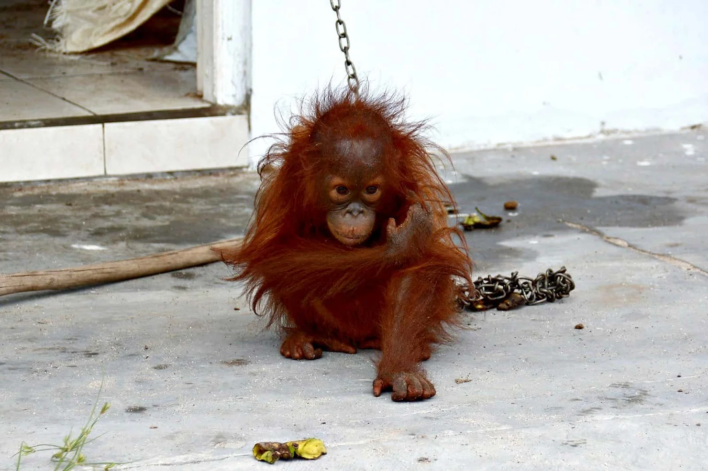

Wildlife: Loss, Damage, & Sanctions. A project on conceptualising the harm from & remedies to illegal wildlife trade.
Wildlife: Loss, Damage, & Sanctions. A project on conceptualising the harm from & remedies to illegal wildlife trade.
Jul 8, 2020
Actions such as illegal wildlife trade, deforestation, mining and pollution are often responsible for huge harm to the environment, including impacts on threatened and endangered species, local economies, culture and state budgets. There are growing demands for the legal system to provide social and environmental justice, particularly against the responsible parties who benefit most from environmental crimes. There is also a need for legal responses to match the scale of this harm, in order to protect the environment and people, and also to deter future harmful actions by ensuring that sanctions are high.
Legal responses include not only criminal and administrative cases, but also civil lawsuits that can provide a wide range of remedies to environmental harm. Civil lawsuits for environmental harm are based on the premise that, when a party harms the environment, they can also be held liable for taking actions to remedy the harm that they caused. This is often referred to as actions to “make the public whole”, and can involve actions such as restoration, species reintroduction, financial compensation and apologies.
One of our aims in the WILDS project has been to explore, and explain, how to pursue a civil liability lawsuit for cases that involve biodiversity--specifically threatened species affected by illegal wildlife trade. This has proved a huge challenge, drawing not only on the expertise of lawyers in >5 countries, but also ecology, economics and geography.
Our first public draft of our guide is now available for public discussion.
It explores the challenges to developing these types of lawsuits. The guide is focused on Indonesia, but also illustrates the potential for similar legal action in other countries. We are using this guide to aid our further discussion and revisions with government agencies, legal experts and NGOs. You are welcome to email us if you are interested in joining these discussions, or to learn more.
The WILDS Project is supported by the UK Government through the Illegal Wildlife Trade (IWT) Challenge Fund Conservation Governance Lab, Lancaster Environment Centre, Library Ave, Bailrigg, Lancaster LA1 4AP, UK ©2021 by WILDS.
Sebagaimana kontraknya, proyek ini telah berakhir pada 31 Mei 2021.
Naskah disalin sepenuhnya dari https://jacobphelps.wixsite.com/wilds